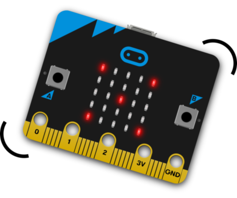
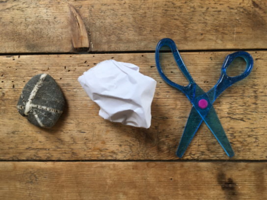
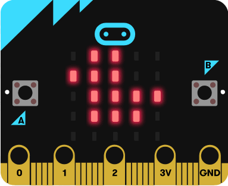

First click here to open the micro:bit code editor in a new browser tab, then come back to this tab to continue with these instructions.
The first project that we're going to make is a simple dice, so let's create a new project named My Dice and get ready to follow the tutorial:
If you're interested in Python programming, you can click the down arrow beside "JavaScript" at the top of the code editor window and select "Python" to see the Python code that would do the same as your blocks program. Click "Blocks" to get back to the block programming view.
Learn how to show random numbers on the LED display and respond to the micro:bit being shaken.
Make the LED display look like dice faces instead of numbers. This project teaches you how to set any pattern on the LED display, and introduces using variables and if-else blocks to control what your program does.
There's no video here - just read the steps on the page and make sure your code looks like the sample it gives.
Make the micro:bit play Rock Paper Scissors, or at least choose plays for you.
The same sort of program as Dotty Dice but you might want to come back to this one after looking at Teleporting Duck and see if you can make two micro:bits play together and work out who won.
Learn how to make simple animations on the LED display.
Make a duck teleport between two micro:bits. You'll need to work with a friend to test this one.
Once you've got your Teleporting Duck working, follow this project to let it travel to more than one other micro:bit.
Use the micro:bit to make music. This project uses the Scratch editor we worked with last week. Ask for help to get Scratch Link working so that Scratch can talk to the micro:bit.
Turn the micro:bit into a simple game controller. This project uses the Scratch editor we worked with last week. Ask for help to get Scratch Link working so that Scratch can talk to the micro:bit.
There are lots of other projects to try. Have a go at anything on the projects page, but make sure you pick ones that don't need other equipment that we don't have!
The images on this page are either taken from the Micro:bit Educational Foundation's website or are screen shots from the micro:bit code editor. The images from Micro:bit Educational Foundation's website are made available by them under the Creative Commons Attribution - ShareAlike 4.0 International (CC BY-SA 4.0) licence.